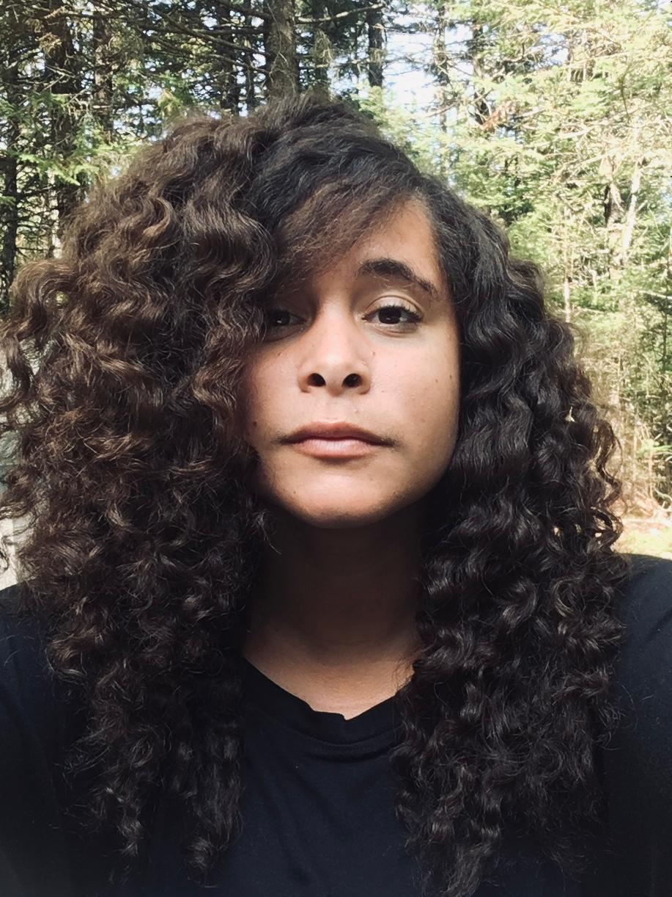

Katlyn M. Turner is a researcher, traveler, educator, and creator who focuses on technology, environmental and climate justice, marginalized communities, and self determination. She is an Assistant Professor of Environmental Justice and Technology at CU Boulder, in the Department of Information Science. She is additionally the founder and Principal Investigator of KTLN Consulting. She has led & conducted research on topics like critical minerals x AI, frontline communities and storytelling sovereignty, the theory & practice of inclusive innovation, epistemic & institutional exclusion in the nuclear sector, and climate justice praxis in sub-Saharan Africa. Her theoretical frameworks about technology and social hierarchy aim to make visible the externalities of technology systems and the ways in which intersectionally marginalized groups are uniquely impacted; they are frequently cited in Black feminist, HCI, STS, and systems engineering communities. Her work has been featured in large venues like climate week, The Conference, and COP, and intimate ones like Racism and the Origins of the Atomic Bomb and the Indigenous and Antiracist Innovators Summit. Katlyn earned her PhD from Stanford University advised by the late Prof. Rodney C. Ewing and Prof. Wendy Mao. When not doing research-y things, you can find her hiking with her dog Ru, at the City Park farmer’s market, biking (outside or in dark rooms), or on a train in Europe somewhere.
Katlyn is accepting applications for Masters (MS and BAM) and PhD students to begin in Fall 2027. For details (including deadlines and prerequisites) about the graduate programs in Information Science at CU Boulder, please consult the department's webpage, linked here.
| Counter-Narratives: A Toolkit for Storytelling and Narrative Sovereignty, based on the research of Katlyn, Nina Lutz, Rachel Marston, Jonathan Camuzeaux, and Margot Brown is live on the Frontline Resource Institute. |
| Katlyn was a co-convenor of the workshop Towards Cross-Pollination Between CSCW and Frontline Environmental and Climate Justice, at the 29th ACM Conference on Computer Supported Cooperative Work and Social Computing (CSCW) , on October 10, 2026 in Salt Lake City. The workshop paper can be found on the ACM Digital Library, here . |
| Katlyn was an invited speaker and moderator on several panels at the 2026 Climate Justice Hub , hosted by Fordham University and the Frontline Resource Institute at New York Climate Week, on September 21 2026 in Manhattan. |
| Katlyn was an invited panelist at the 2026 Center for Engagement, Environmental Justice & Health (CEEJH) Symposium, on the panel Narrative and Storytelling Sovereignty for Frontline Communities , on September 19, 2026 at Bowie State University in Maryland. |
| Katlyn was an invited speaker at the Congressional Black Caucus Annual Legislative Conference on the panel Activating Our Power: Energy Bills, Public Health and Accountability in the Age of Datacenters , on September 17, 2026 in Washington, DC. |
| Katlyn was an invited speaker at the American Nuclear Society Annual Conference, on the panel With Great Processing Power Comes Great Responsibility: Ethics and Opportunities for AI and Tomorrow’s Workforce , on June 2, 2026 in Denver. |
| Katlyn has accepted a role as Assistant Professor of Environmental Justice & Technology in the Department of Information Sciences at CU Boulder , effective Fall 2026 ! |
| Katlyn's coauthored work on water management in Angola A subnational social vulnerability index for use in drought decision support systems was published in Environmental Science & Policy on March 2, 2026. |
| 2025 |
| Katlyn is convening the upcoming session: Frontline Community-Driven Approaches to Climate and Environmental Change: Theory, Narrative, and Practice on December 18, 2025 at the American Geophysical Union Conference (AGU25) in New Orleans, Louisiana. |
| Katlyn’s work on frontline communities was featured as an editor highlight in Eos. |
| Katlyn is the senior author on: Best Practices for Frontline Narrative and Storytelling Sovereignty: A Guide. |
| Katlyn is the senior author on the publication: A Mixed Methods Needs Assessment of Frontline Communities: Insights for Engagement and Partnerships Between Communities and Intermediary Organizations, published September 8, 2025 in Community Science. |
